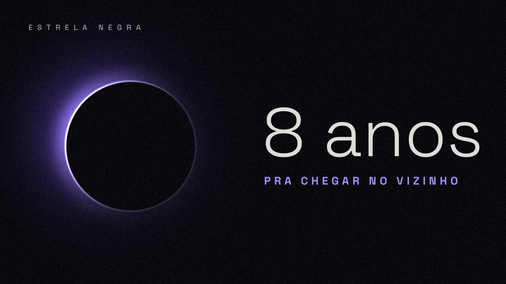
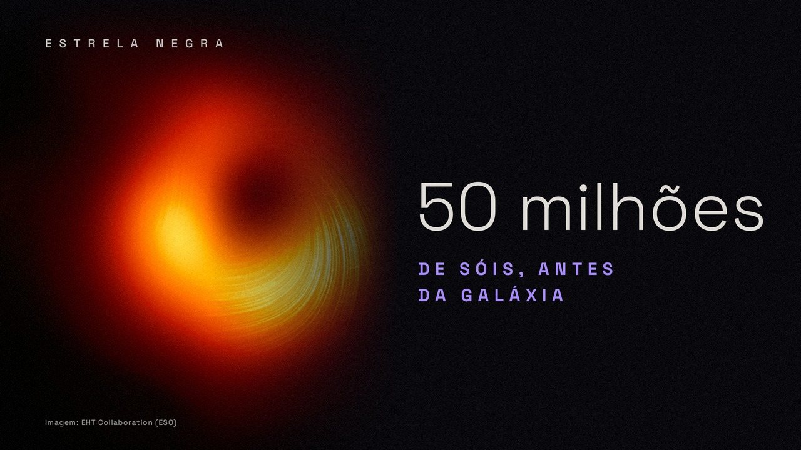

Todas as matérias

Como se formam os buracos negros: o colapso que dura menos de um segundo
Buracos negros

Kamoʻoalewa, a quase-lua da Terra, é um pedaço da Lua? O que mudou em 2026
Asteroides

BepiColombo entra em órbita de Mercúrio depois de oito anos: por que chegar ao vizinho é tão difícil
Sistema Solar

Voyager 1 chega a um dia-luz da Terra, 49 anos depois do lançamento
Exploração espacial

O buraco negro que nasceu antes da galáxia: o que o James Webb mediu no QSO1
Universo jovem

Ondas gravitacionais: como o LIGO mede um tremor 400 vezes menor que um próton
Relatividade

3I/ATLAS, o cometa de outra estrela que pode ser mais velho que o Sol
Objetos interestelares

E se a gravidade não for quântica? A proposta que pode ser testada em laboratório
Física fundamental